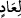

tıpkı birinin arkasından giderek durmadan onu iteleyen biri gibi lânet peşlerine takıldı.
Lânetin onlardan hiç ayrılmaması, mes’eleyi daha güzel anlatabilmek için “bunların
peşine takılmak” şeklinde ifade edilmiştir. Bunlar nereye giderlerse gitsinler lânet
bunların peşini bırakmayacaktır; ne yaparlarsa yapsınlar onlarla birlikte olacaktır,
demek isteniyor. Ayrıca tâbi olanların önderlerinin peşine takılmalarına uygun düşen de
budur. Yani tâbi olanlar önderlerinin peşinden ayrılmadıkları için yaptıklarına tam bir
karşılık olmak üzere lânet de bunların peşinden ayrılmamış oluyor.
Kıyamet gününde de onların peşini bırakmayacak olan lânet ise sürekli ateş azabıdır.
“İyi bilin ki Âd” kavmi “Rablerini inkar ettiler.” Sanki Dehriyye/Ateistler gibi O’nu
inkar ettiler. Dehrîler, sadece duyu organlarıyla hissedilenlerin varlığını kabul eden,
akıl ile idrâk edilenleri ise reddeden ve bütün olanları zamana/dehre nisbet eden
kimselerdir.
Şunu da “iyi bilin ki Hûd’un kavmi Âd Allah’ın rahmetinden uzak olsun.” et-
Tibyân’da belirtildiği gibi Allah onları uzaklaştırdı, onlar da iyice uzak oldular.
Burada ‘Hûd’un kavmi’ ifadesi Âd’ı açıklamaktadır. Çünkü biri Hûd’un kavmi eski
Âd, diğeri İrem’in kavmi yeni Âd olmak üzere iki tane Âd vardır.
Âyette hem “ (iyi bilin ki)” ifadesi hem de onlar hakkındaki bedduâ iki kere
tekrarlanmıştır. Bunun sebebi durumlarının ne derece korkunç ve ne derece berbat
olduğunu göstermek, onlardan ibret almaya ve onların durumuna düşmemeye çalışmaya
teşvik etmektir.
Mesnevî’de şöyle denilir:
Şu halde Allah’a şükürler olsun ki, bizi cihana
Bizden önce gelip helâk olanlardan sonra getirdi.
Böylece Hakk’ın nasıl helâk ettiğini duyduk
Geçmiş zamanlarda gelip geçenleri
O kurtların kemiklerini, tüylerini apaçık
Görün de ibret alın, ey ulular.
Akıllı insan şu varlıktan da geçer, hırs ve gururu da bırakır;
Firavunların, Âd kavminin başına gelenleri hatıra getirir.
Varlıktan, kendini büyük görmekten, hırstan vazgeçmezse,
Onun hâlinden, onun sapıklığından başkaları ibret alır.
“İyi bilin ki Hûd’un kavmi Âd Allah’ın rahmetinden uzak olsun.” ifadesi onların
helâk olması için yapılmış bir bedduâdır. “Uzak olsunlar, yok olup gitsinler.” demektir.
Bunun maksadı ise onlar hakkında anlatılanlar sebebiyle başlarına gelen azaba
kendilerinin sebep olduğunu göstermektir. Çünkü onlar zâten helâk olmuş iken onlar
hakkında “helâk olsunlar” diye bedduâ edilmiştir. Bunun faydası yukarıda zikredildiği
gibidir. Ayrıca “” başındaki lâm, bir şeyi hak etme ve açıklama mânâlarına delâlet
eder. Sanki: “Kim helâk olsun?” diye bir soru soruluyor ve buna “Âd helâk olsun!” diye